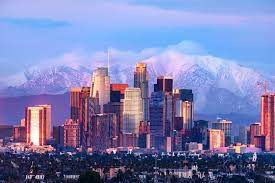
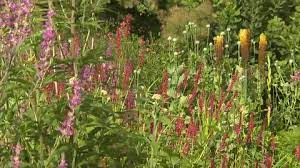
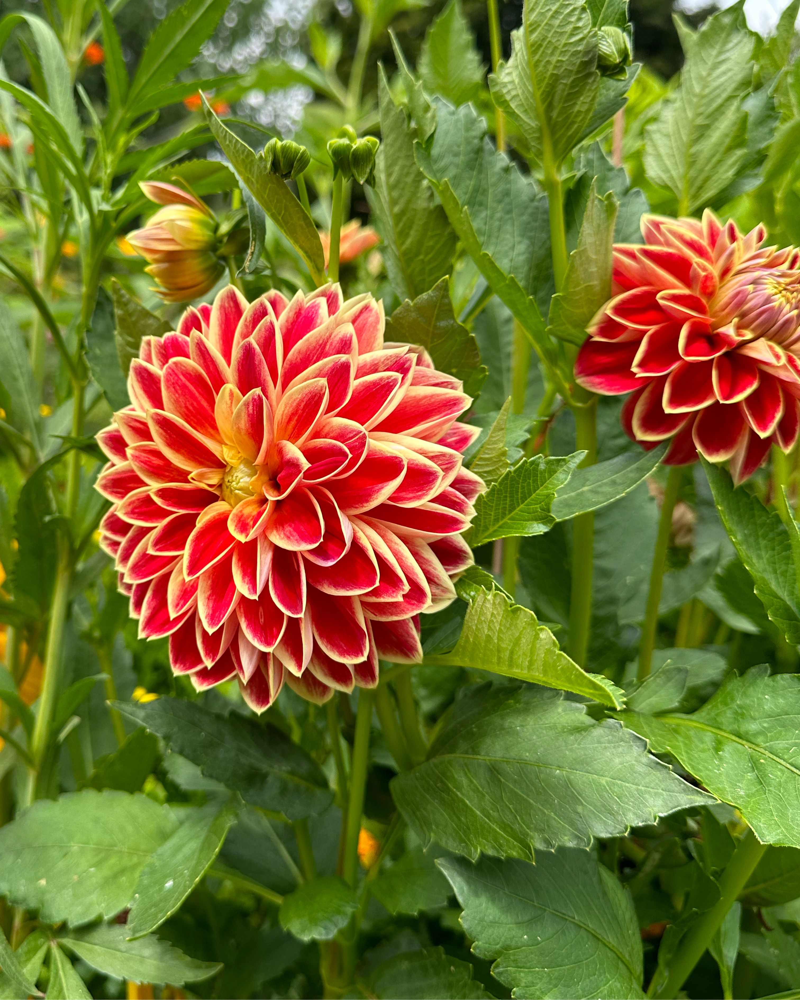
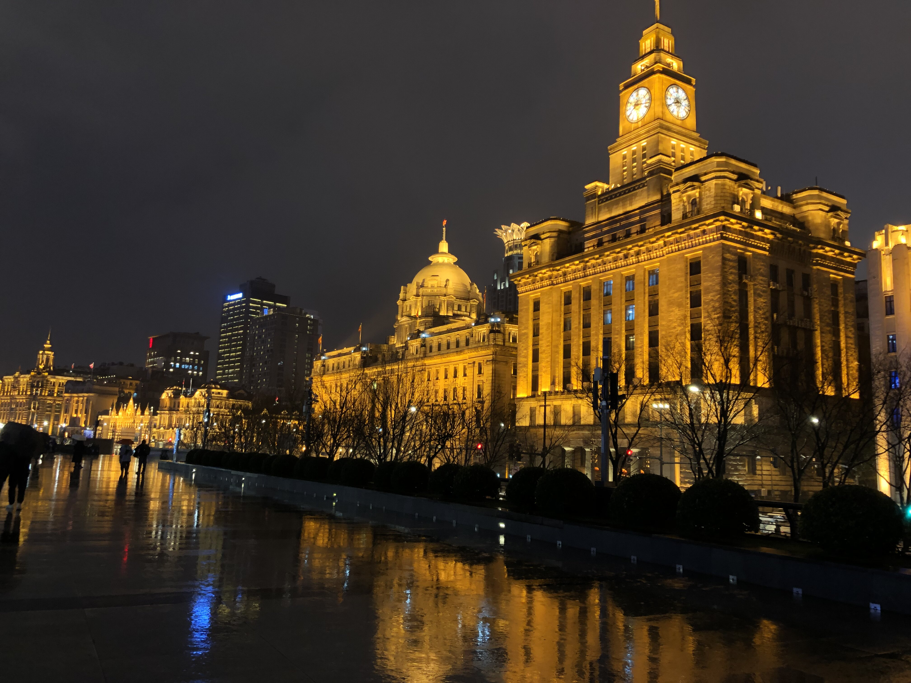
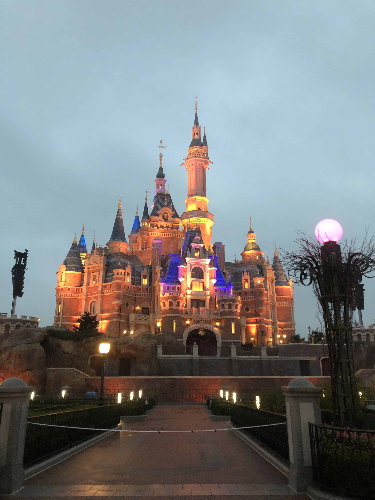

Los Angeles, often referred to as L.A., is a large city located in Southern California, USA. Known for its glamorous allure and cultural diversity, the city is a melting pot of various ethnicities, languages, and lifestyles. The city's skyline is a mosaic of modern skyscrapers, historic architecture, and palm tree-lined streets, offering a captivating blend of urban sophistication and laid-back charm.
As a global center for entertainment, Los Angeles is the heart of the American film and television industry, epitomized by the iconic Hollywood sign perched atop the Hollywood Hills. The city is home to numerous studios, theaters, and production companies that shape the world's cultural landscape through movies, TV shows, music, and more. Alongside its cinematic fame, Los Angeles boasts a vibrant art scene, with an array of museums, galleries, and street murals that celebrate creativity and innovation. Additionally, the city's culinary scene reflects its diverse population, offering a fusion of flavors from around the world and a penchant for health-conscious dining trends. With its mix of celebrity culture, beachside leisure, and artistic spirit, Los Angeles stands as a symbol of the modern American dream.
Photo Gallery

City landscape view of LAHollywood Walk of FameSunset view of LACity view of LA
Monet’s Garden

In the village of Giverny, France, Monet’s garden is a sanctuary that inspired the paintings of Claude Monet. Monet's garden helped him determine the subjects of his paintings, as he drew inspiration from the pond and surrounding flowers in his impressionist works. Common nature-related themes from Monet’s garden became a recurring motif throughout all of his works.
The garden is divided into the Clos Normand flower garden and the Japanese water garden. The Clos Normand consists of flowers arranged in a formal manner, while the Japanese water garden consists of lilies and a water bridge that inspired a lot of Monet’s water related works.
Photo Gallery
Monet’s Garden includes the house in which he resided during his time exploring his artistic life.
Monet is iconically known for his impressionist paintings that now line the walls of every room in his house in Giverny, France.
The Japanese Water Garden is one of two main areas within Monet’s Garden, known for its iconic water lilies.
Monet’s Garden has many iconic structures within the Clos Normand

Monet’s Garden is filled with unique, vibrant, and beautiful flowers and plants.
Pictured Rocks National Lakeshore
Pictured Rocks National Lakeshore, America’s first National Lakeshore,
is along the southern shore of Lake Superior in Michigan’s beautiful
Upper Peninsula. With stunning beaches, 10 inland lakes, and nearly
100 miles of trails, everyone can find something to enjoy at Pictured
Rocks! (source: https://www.nps.gov/piro/planyourvisit/index.htm)
No matter the time of year, there is something to do at Pictured
Rocks! Summer: visit beaches, backpack, and camp (permit required).
Looking for views of the cliffs? The best way to see the cliffs is
from the water on a commercial boat tour. Fall: Autumn colors in the
Upper Peninsula are often breathtaking, drive the park roads to view
the changing leaves! Hunting and fishing opportunities (state
regulations apply) abound during fall! Winter: Cold weather brings
otherworldly frozen waterfalls, called “curtains”. Snowshoeing,
skiing, and ice fishing are other popular winter activities. Check
road closures and conditions before heading into the park in the
winter. Spring: Go birding or walk the marsh trail! (source:
https://www.nps.gov/piro/planyourvisit/index.htm)
Geographical Location: North America
Photo Gallery
The pictured rocks lakeshore is stunning at sunset.
One of the many lakeshore views is an arch over the water.
Miners falls is one of Pictured Rocks’ many waterfalls and
gorgeous hikes.
The pictured rocks beach is an amazing place to spend a day in
Munising.
Pictured Rocks also features campsites.
Shanghai, China
Geographical Location: Asia
Shanghai, a vibrant metropolis, is nestled along the eastern coast of China. With a population of over 26 million, it ranks as one of the world's most populous cities and serves as a global financial hub. The cityscape of Shanghai is an exquisite blend of history and modernity, where towering skyscrapers such as the iconic Oriental Pearl Tower and the Shanghai Tower punctuate the skyline alongside historical landmarks like the Bund, a waterfront promenade that showcases colonial-era architecture.
The city has an unparalleled shopping scene that caters to all tastes, from luxury brands in shiny malls to hidden gems in busy markets. Moreover, Shanghai's culinary landscape is a testament to its multiculturalism, offering a symphony of flavors that range from traditional street food like xiaolongbao (soup dumplings) to avant-garde dining experiences.
Photo Gallery

The Bund at night

Enchanged Storybook Castle at Shanghai DisneylandShanghai’s famous soup dumplingsHanging lanterns to celebrate Chinese New YearShanghai Natural History Museum Building
Ha Long Bay, Vietnam
Geographical Location: Asia
Ha Long Bay is a UNESCO world heritage site and a popular tourist destination in northeast Vietnam. The bay is famous for its crystal clear emerald colored waters dotted with limestone mountains that rise up from the water. Many tourists visit and take boat tours around the islands that tend to me named after their peculiar shape. For instance, tourists can take kayak expeditions around the Teapot islets, a set of islands shaped like teapots, or be rowed around Stone Dog, which appears to be shaped like a dog.
The Ha Long Bay region is popular for scuba diving, rock climbing and hiking, particularly in mountainous Cát Bà National Park. The nearest city is Hai Phong, which is approximately 75 km away. It is easier to reach Ha Long Bay by boat because the journey from Hai Phong to Ha Long Bay can take nearly 2.5 hours.
Photo Gallery
A traditional Vietnamese sailboat sails along the Ha Long Bay. Boat tours like this one have become incredibly popular with tourists traveling to Vietnam.Many tourists choose to rent kayaks and explore the bay on their own instead of joining a formal tour. This gives them the flexibility to explore the 1,600 islands that dot the bay on their own!Scuba diving gives tourists the opportunity to see the bay from a very different perspective. Scuba diving allows tourists to experience the 50 species of Mollusc and over 200 unique types of fish Ha Long Bay has to offer!Many of the 1,600 islands that dot the bay have been named for there unique shape. In fact, the series of islands that are pictured here have been dubbed the teapot islets because they resemble a teapot!Some of the larger islands that dot Ha Long Bay actually house massive caves that are open to the public. This is an image of Sung Sot, which is the largest cave in the bay!